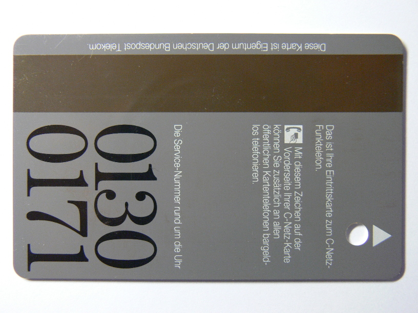
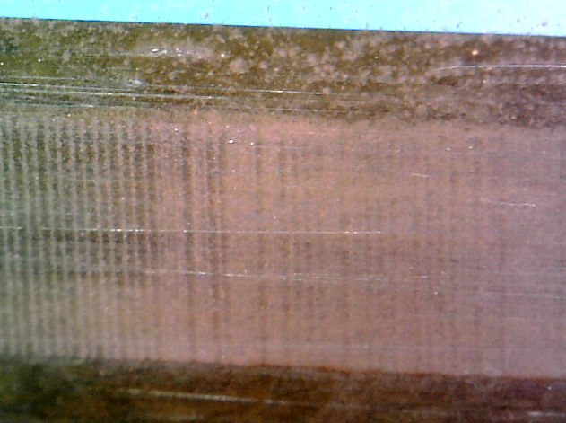
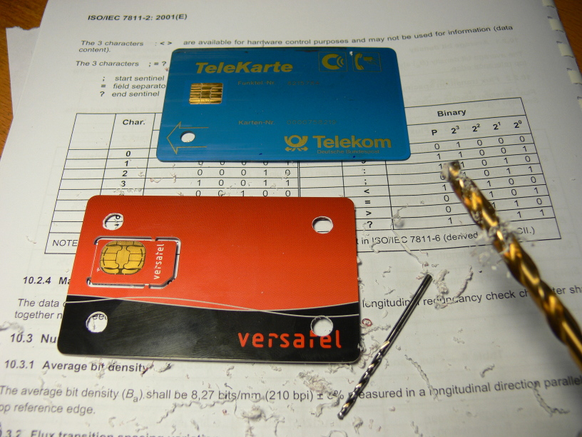
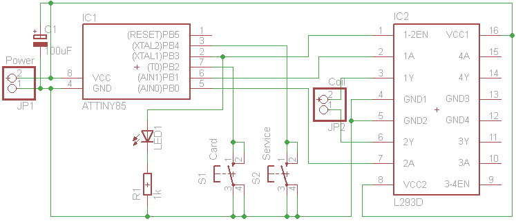
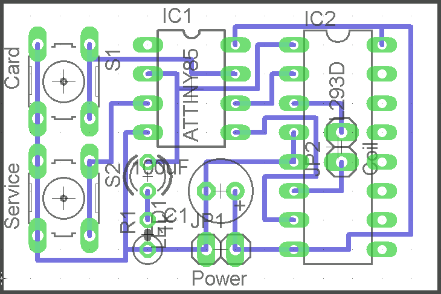
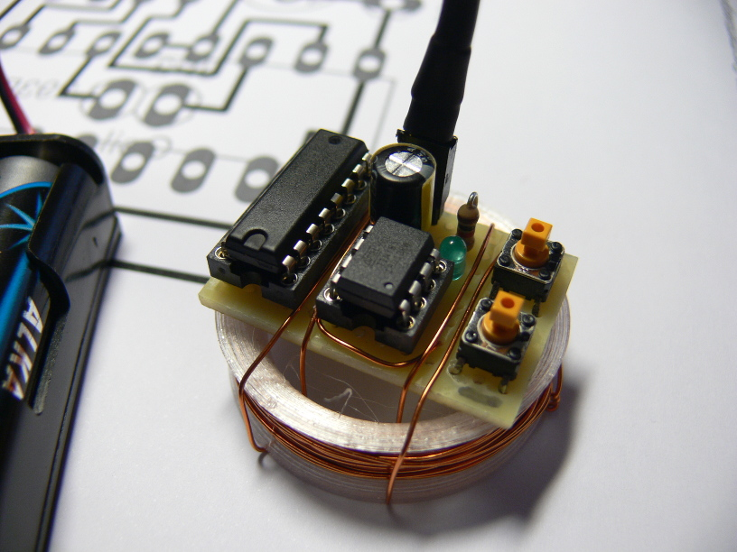
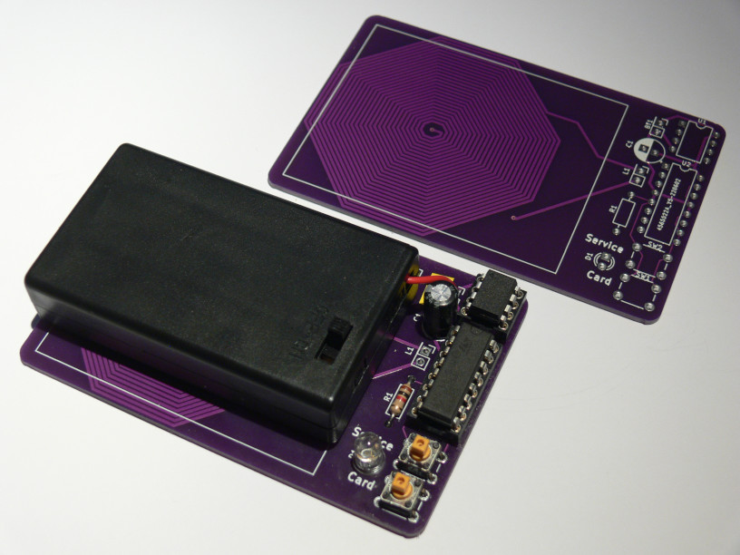

C-Netz Magnetic Card Emulator

Why emulating a magnetic card with a magnetic strip?
Maybe you got a C-Netz phone with magnetic card reader from the attic, friend or Ebay?
But a card is missing. Without the card you cannot use that C-Netz phone at all.
Then you buy at high price on Ebay to get a used card.
This card might make your phone work, but 'BSA 44' phone requires service reset to disable theft protection.
The BSA 44 phone requires a magnetic service card to unlock the phone after power loss.
The emulator can help you in this case.
And it is really a cool way.
Emulating Magnetic Card

I put a card inside a bowl with fine rust (iron oxide) and water.
As depicted above, the third track of the card attracts tiny patricles of iron oxide.
The bits can be seen under a microsope.
The rusy-looking lines on the left represent a 0-bit per line.
The wider lines which appear brighter are actually two lines, representing a 1-bit.
Each line is a reversal in the magnetic flux.
For deeper understanding, refer to ISO 7811 standard.
The idea is to transmit a strong magnetic signal to the card reader's head from outside the case, rather than connecting wires inside the reader.
This way no modification to the card reader is required.
This idea is not new.
'MagSpoof' is a project to emulate credit and debit cards.
The MagSpoof hardware and my hardware is almost the same.
You can run the C-Netz magnetic card emulator on MagSpoof hardware, if you just add another switch.
I strongly suggest connecting an oscilloscope to the output (not directly to the head) of the phone's card reader.
This helps you to find out if your transmitter is strong enough and the phone's card reader receives a signal.
You can generate the signal with the sound output of your PC.
Your PC must be connected to an amplifier.
Instead of using a speaker, connect a coil to your amplifier.
I used a 0.5mm (diameter!!) copper wire with 50 turns and a diameter of 30mm.
# src/magnetic/cnetz_magnetic -a hw:0,0 1234567
String to send: ;10234567=123450000?
2^0: ... 0 0 0 0 1 1 0 0 1 0 1 0 1 1 1 0 1 0 1 0 0 0 0 1 0 0 0 0 0 ...
2^1: ... 0 0 0 0 1 0 0 1 1 0 0 1 1 0 0 1 1 0 0 0 0 0 0 1 0 0 0 0 0 ...
2^2: ... 0 0 0 0 0 0 0 0 0 1 1 1 1 1 0 0 0 1 1 0 0 0 0 1 0 0 0 0 0 ...
2^3: ... 0 0 0 0 1 0 0 0 0 0 0 0 0 1 0 0 0 0 0 0 0 0 0 1 1 0 0 0 0 ...
Par: ... 0 0 0 0 0 0 1 0 1 0 1 1 0 0 0 0 1 0 1 1 1 1 1 1 0 0 0 0 0 ...
main.c: 258 info : Total bits: 915
main.c: 259 info : Samples per bit: 20
main.c: 260 info : Total samples: 18300 (duration: 0.381 seconds)
-> TX <-
In this example the first sound card is used.
The card to be emulated has the phone number 1234567.
See Software usage for more info about selecting sound card.
A cracking sound, followed by rectangular tone is played.
During the tone, the switch inside the card reader must be briefly closed for a short fraction of a second.
The switch is used to detect insertion and removal of the card.

In order to close the switch inside the card reader, just punch a hole into some platic card.
Don't use anything other than an ISO platic card.
I tried cardboard, but it did not work.
The thickness of the card must be close to 0.8mm to make the switch work correctly.
I just drilled four holes into the card, so I do not need to care what orientation the card must be inserted.
The center of the hole must be exactly 10mm away from each edge of the card.
The diameter is 5mm, but use 6mm, so you don't need to be exactly 10mm away from the edge.
Don't forget to deburr the edge inside the hole.
Slide the card half way into the card reader.
Match the hole with the arrow or dot shown on the slot of the card reader.
On the other side of the card reader you will find the head.
(Just open it to see where it is located.)
Hold the coil close to the head. Try different angles of the coil.
When you hear the cracking noise or you see the 'TX' flashing on the terminal, quickly push the card all the way in.
This needs to be done before the sound or 'TX' disappears.
It takes a little parctice.
You may also pull card quickly half way out, after fully inserting it.
It does not matter what direction the card is moved, as long as the switch is only closed for a short time.
If you do it slowly, you will hear the two clicks, one when the switch is closed and one when it is opened.
Build Your Own Magnetic Card
The idea is to drive a coil with a step motor driver IC.
This way you actually transmit the magnetic card's signal over several centimeters to the card reader's head.
The coil is a 0.5mm thick wire and has 50 windings with about 30 mm in diameter.
In the 'cad' directory of the git repository You will find the OpenSCAD and STL files of a 'thing' to wind the coil around.
Alternatively wind the coil around two fingers 50 times and then fix the windings by wrapping tape around it..

It is a quite simple schematics.
The difference between Magspoof and this one is just an additional switch.

You find the PCB drawings inside the "layout" directory of the git repository.
Be sure to print it without scaling!
- ATTINY85
- L293D (or stronger)
- two switches
- LED of you choise
- 500 Ohms resistor (if LED is not that bright)
- 100uF buffering capacitor for power input

Also there is a KiCad version with the coil on PCB and space for battery holder:

Leave the fuses of the ATTINY85 as it is shipped by default.
The fuses are set to use the internal 8 MHz clock with scaling to 1 MHz.
The Arduino file is located inside the "src/magnetic" directory of the git repository.
It runs at 8 MHz.
You don't need to disable the 1 MHz scaling via fuses.
It is done in software.
Using the Magnetic Card
Power it up using three AA batteries.
Be sure not to reverse the power, it will destroy both ICs.
The LED will blink 3 times, which takes about 1 second.
If it does not take about 1 second, check fuses!
Afterwards it will flash every two seconds, to indicate that the power is on.
Normal mode:
- Turn power on.
- The LED will flash 3 times.
- Press the switch 1 ("Card") to send a subscriber card sequence (1234567 by default).
- The LED will light up for a fraction of a second.
- Press the switch 2 ("Service") to send a BSA44 service card sequence.
- The LED will light up for a fraction of a second.
Quickly after pressing the switch, insert the card.
If the card is inserted within 150 ms after pressing the switch, you may hear a beep from the phone.
This means that the card was accepted.
Test the emulator by location the coil close to an AM radio and you should hear the signal when you press a button.
You may also connect some coil to an oscilloscope/headphone and hold the emulator's coil close to it.
Debug mode:
- Press and hold switch 1 or 2.
- Turn power on.
- Release the switch.
- The LED will continuously light.
- Hold switch 1 ("Card") to send sequence of 0s.
- Hold switch 2 ("Service") to send sequence of 1s.
Do not hold longer than two seconds, as the H-bridge becomes hot very quickly.
Touch it, to feel when it becomes too hot.
Programming mode:
- Turn power on.
- The LED will flash 3 times.
- Press both switches simultaniously and release.
- The LED will continuously flash.
- Press switch 1 ("Card") to change subscriber number.
- or Press switch 2 ("Service") to change security code. (Sicherungsschlüssel)
- The LED will blink several times, indicating the first digit. '0' is indicated by blinking 10 times.
- After blinking the first digit, a pause is made and then the LED will blink the second digit and so on.
- After blinking all digits, the LED will light half a second, to indicate input of the first digit.
- Press switch 1 as many times as your first digit's value you want to enter. 10 times for a '0'.
- Press switch 2 to complete your digit input. The LED will light half a second to indicate input the next digit.
- If you have entered all digits, press switch 2 again to store the entered sequence.
- The LED will softly flash one time. This inidcates correct number. The number is stored.
- On error, LED will start flashing again. Repeat input!
- To abort input and return to normal mode: Press both switches simultaniously and release.
Example to program subscriber number '3839349":
- Press both switches simultaniously and release.
- The LED will continuously flash.
- Press switch 1 ("Card") to change subscriber number.
- The current subscriber number will show up blinks of the LED.
- Press any switch to abort blinking and directly enter new number.
- The LED light half a second to indicate input.
- Press switch 1 three times.
- Press switch 2, the LED will light half a second.
- Press switch 1 eight times.
- Press switch 2, the LED will light half a second.
- Press switch 1 three times.
- Press switch 2, the LED will light half a second.
- Press switch 1 nine times.
- Press switch 2, the LED will light half a second.
- Press switch 1 three times.
- Press switch 2, the LED will light half a second.
- Press switch 1 four times.
- Press switch 2, the LED will light half a second.
- Press switch 1 nine times.
- Press switch 2, the LED will light half a second.
- Press switch 2 again. The LED will softly flash one time. The number is stored.
The Subscriber number entered must conform to a 7-digits or 8-digits C-Netz subscriber number.
The Security code must be a 16 bit unsigned integer, entered in decimal notation (from 0 to 65535).
BSA 44 Service Cards

When inserting (simulating) a service card, a BSA44 phone will show "Wartungskarte" on its LC display.
Turn off the phone and then turn it on again, but leave card inserted and power connected.
Press the top-left button two times, so that is shows "SA....".
Press X 0 X 1 X 2 to reset password to '0000' and disable theft protection.
Turn off the phone and remove card, but leave power connected.
If the power is disconnected, the theft protection will be activated and unlocking as described above is required again.
Older 'LED' display phones directly show "SA....", so they must not be restarted before using the service menu.
You may directly press X 0 X 1 X 2 to reset it.
[Back to main page]
|